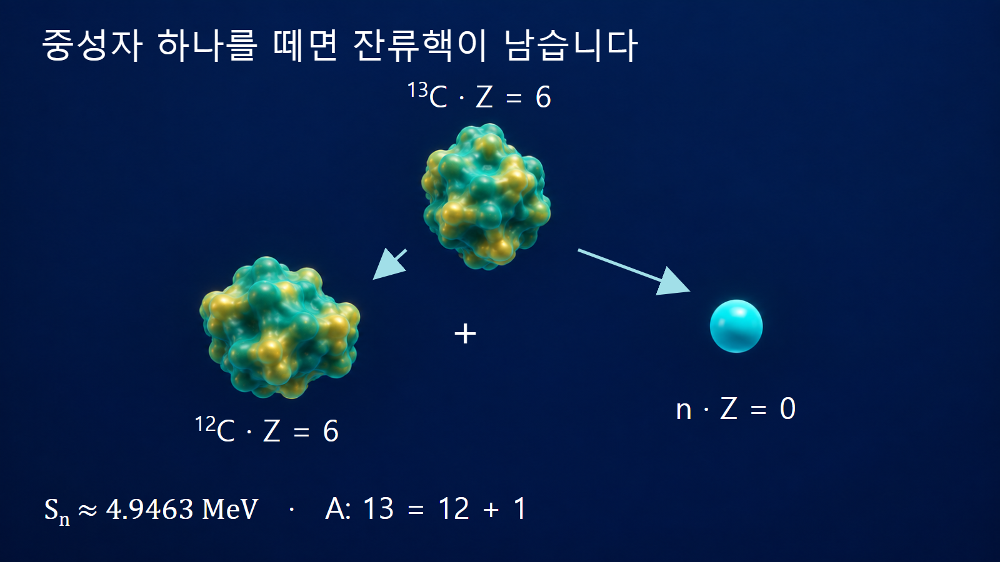
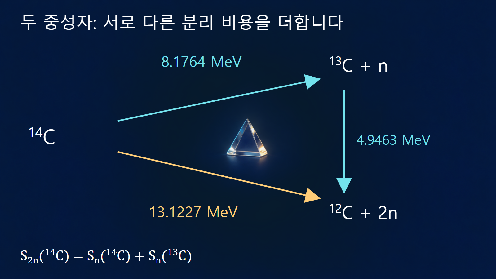

질량·에너지와 핵반응 · 025
분리에너지
원자핵에서 특정 핵자 하나를 떼어내는 최소 에너지
분리에너지는 원자핵에서 지정한 입자를 떼어 내고, 남는 핵을 정해진 상태에 두는 데 필요한 에너지입니다. 전체 핵을 모두 분해하는 결합에너지와 달리 최종 핵이 남습니다. 어느 입자를 몇 개 떼는지, 남는 핵의 바닥상태를 기준으로 하는지가 식과 숫자를 결정합니다.
중성자 하나를 떼면 남는 핵도 계산에 들어갑니다
질량수 A, 원자번호 Z의 핵에서 중성자 하나를 분리하면 잔류핵은 (A−1,Z)가 됩니다. 바닥상태 사이의 중성자 분리에너지는 Sn(A,Z)=[m핵(A−1,Z)+mn−m핵(A,Z)]c2입니다. 최종 핵과 자유 중성자의 상대운동 에너지를 0으로 보낸 상태 차이를 구합니다. 분리 후 입자가 움직이거나 잔류핵이 들떠 있으면 그 에너지는 추가로 필요합니다.
전체 결합에너지로 쓰면 Sn(A,Z)=B(A,Z)−B(A−1,Z)입니다. 핵자 한 개를 없앤 두 핵의 전체값 차이이며, B(A,Z)/A가 아닙니다. 질량표의 ‘마지막 중성자’라는 표현도 고유한 표식을 가진 중성자의 자리를 가리키지 않습니다. 동일한 중성자들을 포함하는 두 핵의 바닥상태 에너지를 비교하는 말입니다.
탄소-13의 평균값과 중성자 분리에너지를 비교합니다
첫 번째 예시는 13C → 12C+n입니다. A는 13=12+1로, 양성자 수는 6=6+0으로 보존됩니다. 평가질량표로 얻은 전체 결합에너지는 탄소-13이 약 97.1080 MeV, 탄소-12가 약 92.1617 MeV입니다. [3] 차이를 구하면 Sn(13C)≈4.9463 MeV입니다. 직접 분리에너지 표의 4946.3087 keV와도 일치합니다. [1]
같은 탄소-13의 핵자당 평균 결합에너지는 약 7.4698 MeV/핵자입니다. 약 4.9463 MeV와 다른 이유는 중성자를 떼어 낸 뒤 탄소-12 안에 약 92.16 MeV의 결합에너지가 그대로 남기 때문입니다. 모든 핵자가 같은 7.4698 MeV짜리 결합 하나씩을 나눠 갖는 모형으로 이해하지 않습니다.

양성자를 떼는 식은 원자번호도 바뀝니다
양성자 한 개를 분리하면 잔류핵은 (A−1,Z−1)입니다. 핵질량을 사용할 때 Sp=[m핵(A−1,Z−1)+mp−m핵(A,Z)]c2입니다. 중성 원자질량을 사용할 때는 자유 양성자 대신 중성 수소-1의 질량을 사용해 전자 수를 맞춥니다. 전자 결합에너지 차이는 정밀도에 따라 별도로 보정합니다.
탄소-13에서 양성자를 떼면 탄소-12가 아니라 붕소-12가 남습니다. 평가된 Sp 값은 약 17.5334 MeV로, 같은 핵의 중성자 분리에너지 약 4.9463 MeV와 크게 다릅니다. [1] 떼는 입자의 질량만 양성자로 바꾸고 잔류핵을 탄소-12로 남겨 놓는 계산은 전하 보존부터 어긋납니다.
두 중성자 분리에너지는 한 번의 값을 두 배 한 것이 아닙니다
두 번째 계산 예시는 탄소-14에서 중성자 두 개를 분리하여 탄소-12를 남기는 경우입니다. S2n(A,Z)=B(A,Z)−B(A−2,Z)이며, 이는 Sn(A,Z)+Sn(A−1,Z)와 같습니다. 첫 중성자가 빠진 뒤에는 다른 핵이 남으므로 두 번째 중성자의 분리 비용도 달라집니다.
평가값으로는 Sn(14C)=8.1764341 MeV, Sn(13C)=4.9463087 MeV입니다. [1] 합은 13.1227428 MeV이며 S2n(14C) 표의 값과 같습니다. [1] [2] 반면 2×Sn(14C)≈16.3529 MeV는 잘못된 계산입니다. 이 덧셈은 두 상태 사이의 에너지 항등식이며 실제 실험이 반드시 중간 바닥상태를 거쳐 순차 방출한다는 뜻은 아닙니다.

| 분리 대상 | 남는 핵 | 필요한 상태 차이 |
|---|---|---|
| 탄소-13에서 n 1개 | 탄소-12 | Sn≈4.9463 MeV |
| 탄소-13에서 p 1개 | 붕소-12 | Sp≈17.5334 MeV |
| 탄소-14에서 n 1개 | 탄소-13 | Sn≈8.1764 MeV |
| 탄소-14에서 n 2개 | 탄소-12 | S2n≈13.1227 MeV |
역반응인 포획에서는 생성핵의 분리에너지를 봅니다
탄소-12가 중성자를 포획하여 탄소-13 바닥상태에 이르는 반응의 Q값은 탄소-13의 Sn과 연결됩니다. 즉 12C(n,γ)13C의 바닥상태 질량 차이는 약 +4.9463 MeV입니다. 표적 탄소-12의 분리에너지를 넣는 것이 아니라, 중성자가 새로 결합한 생성핵 탄소-13의 값을 사용합니다.
그렇다고 감마선 하나가 반드시 정확히 4.9463 MeV로 나온다는 뜻은 아닙니다. 입사 중성자의 운동에너지, 여러 감마선으로 나뉘는 전이, 핵의 반동과 최종상태를 함께 고려합니다. 포획단면적이나 발생률도 분리에너지 숫자 하나에서 결정하지 않습니다.
양수와 음수는 입자 방출에 대한 에너지 조건입니다
Sn이 양수이면 바닥상태 핵에서 해당 중성자 분리 최종상태로 가는 데 에너지를 공급해야 합니다. 음수이면 그 최종상태가 에너지적으로 더 낮아 중성자 방출 통로가 열려 있습니다. 그러나 수치의 부호만으로 반감기나 방출 확률을 계산하지는 않습니다. 상태의 폭, 각운동량 등 전이 조건이 더 필요합니다.
양성자나 알파입자처럼 전하가 있는 입자는 밖으로 나올 때 전기적 장벽도 관련됩니다. 입자 방출이 에너지적으로 가능해도 장벽 때문에 오래 머무는 경우를 분리에너지 부호만으로 배제할 수 없습니다. 중성자·양성자 드립선은 분리의 에너지 조건과 밀접하지만, 한 입자와 두 입자 조건 및 짝지음 효과를 함께 살펴야 합니다.
남는 핵의 상태와 자료 정밀도를 함께 기록합니다
표에 있는 바닥상태 분리에너지 S에 잔류핵의 들뜬에너지 Ex를 더하면 그 들뜬 최종상태까지의 내부 에너지 차이가 됩니다. 실제 실험실계의 입사 문턱은 다시 운동량 보존과 반동을 적용해야 하므로 S+Ex라는 숫자만으로 모든 실험 조건의 문턱을 정하지 않습니다. 문턱에너지의 계 변환은 뒤의 게시물에서 구분해 다룹니다.
이 글의 비교는 원자질량 기반 분리 에너지를 MeV로 환산한 값이며 전자 결합에너지 차이가 지배하지 않는 정밀도로 설명합니다. [1] [2] [3] 표의 불확실성 열과 추정값 표시도 확인해야 합니다. 앞뒤 핵종을 정확히 지정한 뒤, 질량수·전하 보존, 단위, 바닥상태 조건을 순서대로 점검하면 분리에너지와 평균 결합에너지를 혼동하지 않을 수 있습니다.